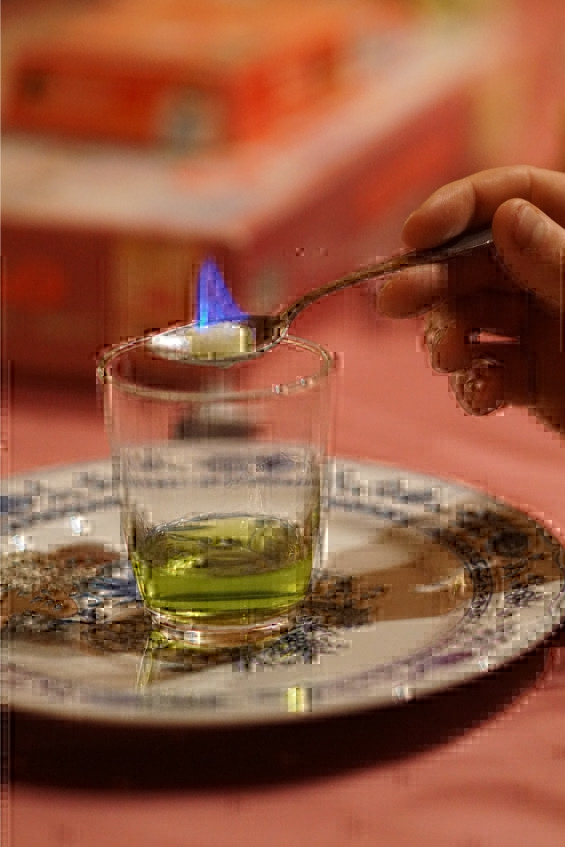
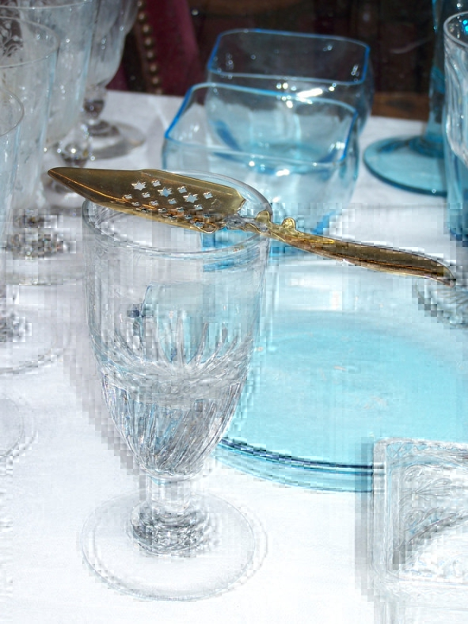

Понятие и виды абсента
Абсент (фр. absinthe) – алкогольный напиток крепостью 55—85% об. (обычно 70% об.) преимущественно зеленого цвета с горьковатым привкусом, изготавливаемый путем настаивания полыни, аниса и других трав (фенхеля, мелиссы, ромашки, петрушки, кориандра, лакрицы, дягиля, аира и др.) на чистом спирте с последующей дистилляцией полученного настоя и его окрашиванием для получения привлекательного внешнего вида. Состав и пропорции трав меняются в зависимости от рецепта, но горькая полынь и анис – обязательные ингредиенты. Некоторые технологии допускают отсутствие перегонки – настой только тщательно фильтруют и сразу разливают по бутылкам.
В экстракте горькой полыни содержится наркотическое вещество туйон, из-за которого абсент в конце XIX – начале XX века был запрещен в большинстве стран Европы. Однако галлюциногенность туйона в количествах, содержащихся в абсенте, научного не доказана. После снятия запрета производителей «на всякий случай» обязали очищать свой продукт от туйона, поэтому современный абсент точно не может вызывать наркотического привыкания и галлюцинаций.
Виды абсентаНапиток не контролируется по региону происхождения, а рецептура у каждого производителя своя, поэтому выделить конкретные виды абсента достаточно сложно. Условно принято классифицировать напиток по следующим признакам:
1. Цвет. Зависит от рецепта, добавок и красителей. Цвет абсента может как влиять на вкус, так и нет.
– Зеленый абсент. Именно таким напиток изображается на полотнах великих живописцев и в кинолентах о жизни французской богемы. На самом деле эта окраска абсента часто обусловлена специальными красителями и делается нарочно, чтобы соответствовать имиджу, ведь при неправильном хранении содержащийся в травяных добавках хлорофилл разрушается на солнце, в результате цвет меняется.
– Желтый. Это как раз выцветший зеленый – или с красителями.
– Красный – с гранатовым соком.
– Голубой – отличается от зеленого только цветом, который получают путем добавления в состав натуральных красителей. Голубой абсент красиво смотрится в коктейлях, больше у него нет преимуществ.
– Черный или коричневый. Напиток производится не из листьев полыни, а из ее корней, нередко в состав добавляют настой черной акации Катеху, придающий сладкие ягодные нотки.
– Прозрачный. Так выглядит абсент по рецепту «ничего лишнего».
2. Крепость. Абсент в принципе не бывает слабым, потому и пользовался популярностью среди студентов, которым нужно было напиться как можно быстрее и дешевле. Но и здесь есть виды для «новичков» и «профессионалов».
– Крепкий абсент – содержание спирта 55—65% об.
– Экстремально крепкий – градусность может достигать 85% об., а сам напиток изготавливается по классической технологии (настойка + дистилляция).
3. Содержание туйона. Несмотря на принятую в Европе норму содержания туйона в пределах 10 мг на литр, на рынке встречаются и другие виды абсента:
– высокое содержание туйона (25—100 мг/л, такие напитки изготавливаются в Швейцарии и Чехии);
– среднее (10—30 мг/л);
– низкое (1,5—10 мг/л);
– нулевое – в Швейцарии подобные напитки называют Logan Fils, во Франции – Absente, зачастую это всего лишь настойки, имитирующие вкус настоящего абсента.
4. Особенности производства. Виды абсента в этой категории часто носят «географическое» название, но оно редко имеет что-то общее с настоящим местом изготовления напитка и может служить только историческим свидетельством родины конкретного рецепта.
Англоязычные источники утверждают, что в XIX веке абсент делили по содержанию алкоголя и качеству на обычный, полуочищенный, очищенный и швейцарский (это не значит, что именно там он и производился).
Сейчас абсент с уверенностью можно разделить только на две категории: дистиллированный – травяной настой перегоняется – и смешанный – дистиллят разбавляют настоем без перегонки.
На европейском рынке действует следующая классификация:
– Blanche (белый) или La Bleue (синий) – кристально чистый прозрачный абсент, бутилируется сразу после дистилляции и не успевает приобрести знаменитый зеленый цвет;
– Verte (зеленый) – белый + травяной сбор;
– Absenta – испанское название напитка. Это абсент с национальным колоритом: с цитрусовыми нотками, освежающий;
– Hausgemacht («домосделанный») – абсент домашнего производства. Изготавливается исключительно для личного потребления;
– «Богемный» (или «в чешском стиле») – абсент без аниса, только с горькой полынью.
История абсентаПожалуй, нет другого алкогольного напитка, с которым связано столько историй и легенд. Излюбленное спиртное потерявших музу поэтов и полуголодных художников, причина душевных расстройств и неиссякаемый источник вдохновения, целебный эликсир и страшный яд «в одном флаконе».
Изначально абсент – всего лишь спиртовая настойка на горьких травах. Крепкий алкоголь помогает организму бороться с простудой и легкими инфекциями, а эфирные масла полыни, аниса, мелиссы и прочих лекарственных растений тоже полезны в умеренных количествах. Неудивительно, что когда-то абсент считался панацеей от всех недугов, начиная от больного живота и заканчивая синдромом хронической усталости. Первые травяные настойки появились в Древней Греции – тогдашние сыны бога Асклепия (покровителя медицины и врачевания) весьма успешно прописывали их больным всех мастей, а победитель колесничных гонок был обязан испить кубок горького напитка, чтобы не забывать настоящий вкус своего триумфа.
При таких не располагающих к успеху условиях абсент стал «алкоголем номер один» во Франции середины XIX века, любимым напитком одновременно бедняков, интеллектуалов и богемы. Известными почитателями абсента были Винсент Ван Гог, Оскар Уайльд, Клод Моне, Пабло Пикассо, Рембрандт, Эдгар Дега, Шарль Бодлер. Возник даже термин «абсентье», обозначающий не тонкого специалиста зеленой эссенции, а человека, который не может справиться с пагубным пристрастием к этому дьявольскому зелью.
Появление абсента: как все начиналосьДобропорядочные сестры Энрио в небольшом швейцарском городке в 1792 году придумали лекарство от простуды и продавали его через знакомого врача Пьера Ординера. По другой версии, сам эскулап и был изобретателем напитка. Сути это не меняет: абсент предназначался только для лекарственных целей и никаких других.
Изначально абсент был прозрачным (все дистилляты бесцветные), зеленый цвет дают травяные добавки. Крепкий эликсир разливали по бутылкам из темного стекла и развозили по аптекам. Прозрачная тара не годилась, поскольку если на содержащийся в микстуре хлорофилл попадал свет, жидкость начинала стремительно «выцветать».
Почему абсент называют «зеленой феей»Имя La Fee Verte («зеленая фея») дал абсенту Пьер Ординер. Название появилось не в порыве романтического чувства, а как продуманный коммерческий ход. В XVIII веке большая часть населения Европы верила в потусторонние силы. С одной стороны, фея олицетворяла волшебство и магию, с другой – женскую красоту.
Абсент позиционировался как лекарство от всех болезней, а фея на этикетке заставляла поверить в сверхъестественную природу напитка. Мужчины того времени считали, что абсент усиливает половое влечение и помогает в соблазнении женщин (опять же, из-за образа раскрепощенной феи, которая не откажется отведать стопочку-другую). Продавцы не стали переубеждать сильный пол в ошибочности сего предположения, наоборот, всячески поддерживали миф.
Большинство лекарств того времени делались на травах и были зелеными, люди привыкли к этому цвету, ассоциируя его со здоровьем. Зеленый абсент считался самым полезным, хотя на самом деле оттенок не имеет принципиального влияния на свойства напитка.
Эра абсентоманииПо одной из версий в популяризации абсента виновато французское правительство, выдававшее этот алкогольный напиток военным во время марш-бросков и кампаний для профилактики малярии и прочих походных неприятностей. Бойцы привыкали к спиртному, после возвращения домой они уже не могли отказаться от абсента. Аналог в русской истории – «фронтовые (наркомовские) сто грамм», которые получали военнослужащие Красной армии в 1940-х годах.
Дамы полюбили абсент за то, что с ним можно было быстро достичь необходимой степени опьянения – вина требовалось гораздо больше, а в то время каждая леди следила за фигурой, да и корсет не позволял употреблять много жидкости.
Внес свою лепту и Анри Дюбье – этот ушлый коммерсант выкупил популярный рецепт и наладил массовое производство абсента во Франции. В 1805 году даже пришлось открыть новый завод в Понтарлье.
Постепенно горький вкус вошел в моду и стал считаться изысканным – говорили, что полынная настойка оставляет во рту привкус сигар с ментолом. Затем кто-то догадался заменить в рецепте виноградный спирт на промышленный, и это сразу снизило стоимость продукта в несколько раз. Вместо одного бокала вина можно было выпить 7—10 порций абсента, притом что опьянение наступало быстрее и… интереснее. Неудивительно, что сначала Францию, а потом и Европу охватила абсентовая лихорадка.
Санкции и запретВ эфирных маслах полыни содержится наркотическое вещество туйон. Этот ингредиент и сделал абсент таким, каким мы его знаем. Никакой другой алкогольный напиток не дает настолько ярких впечатлений в состоянии опьянения: туйон вызывает слуховые и зрительные галлюцинации, меняет цветовосприятие. Состояние измененного сознания – то, что нужно творческим людям, потерявшим музу. Благодаря этому абсент стал чуть ли не официальным напитком богемы.
Низкое качество используемого сырья (иначе напиток выходил слишком дорогим) с одной стороны и повсеместный абсентный алкоголизм с другой привели к резкому ухудшению здоровья французов, так что зеленое зелье даже пришлось запретить на официальном уровне. Получилось это не сразу – слишком велика была народная любовь к эликсиру, но уже к 1880 году абсент прочно ассоциировался с безумием и смертью.
Подлил масла в огонь неприятный инцидент со швейцарским фермером Джином Ландфрэйем. Абсентье в состоянии глубочайшего алкогольного опьянения в 1905 году расстрелял всю свою семью. Поскольку это был не первый случай немотивированной и неконтролируемой агрессии, вызванной полынной микстурой, он стал поводом для пикетов, и правительство было вынуждено запретить напиток (вряд ли так уж неохотно).
Забавно, что родина абсента Швейцария была первой страной, где этот алкоголь оказался вне закона. Первой, но не последней. Постепенно эссенция оказалась под запретом во множестве стран Европы, а там, где на нее не наложили санкции, она со временем просто вышла из моды.
Запрет абсента в европейских странах в конце XIX – начале XX века лоббировали отнюдь не здравоохранительные организации, а винодельческое сообщество (главным образом французы), которое не устраивало изрядное падение винопотребления.
В 60-90-х годах XIX века филлоксера (миниатюрная тля) уничтожила около 90% виноградников Европы. Вино стало очень дорогим напитком, который могли себе позволить только состоятельные господа. Все другие любители спиртного перешли на дешевый абсент, производимый из зернового спирта.
В начале XX века виноградные плантации восстановили. Но население уже привыкло к абсенту и не хотело возвращаться к винам, хотя их стоимость заметно снизилась. У виноделов был единственный шанс спасти отрасль – добиться полного запрета абсента. Что характерно, после запрета на производство абсента во Франции местные коммерсанты вывезли свое оборудование в Испанию, где табу не было.
Возвращение «зеленой феи»Потребовалось порядка ста лет, чтобы абсент снова вышел из сумрака. За это нужно сказать спасибо популярным актерам, которые демонстративно пили абсент в конце теперь уже XX века, и здравому смыслу производителей, безропотно согласившихся принять ограничение на содержание туйона.
Как пить абсентВсе методы сводятся к уменьшению горьковатого привкуса и высокой крепости. Также упор делается на зрелищность самого процесса – подача должна быть красивой. Выбор стопок и бокалов зависит от способа употребления, в некоторых случаях требуются специфические принадлежности.
Абсент можно пить следующими методами:
1. Классический (французский). Сверху на бокале с абсентом размещают специальную ложечку с дырочками, на которую кладут кусочек сахара. Перед употреблением на сахар льют ледяную воду, пока напиток в бокале не помутнеет (французы называют этот эффект Louche). Вода заставляет выпадать в осадок эфирные масла, содержащиеся в спирте. Также считается, что сладкая вода усиливает воздействие туйона, но научно эта гипотеза не доказана. Воду с абсентом разбавляют в пропорции 5:1 (пять частей воды и одна часть абсента).

Ложка для абсента
2. Неразбавленным (в чистом виде). Абсент представляет собой классический аперитив, который можно пить в чистом виде из узеньких рюмок. Перед употреблением напиток охлаждают почти до нулевой температуры, затем выпивают содержимое рюмки залпом. Рекомендуемая разовая доза не должна превышать 30 мл.
3. Чешский (огненный) метод. Стакан на четверть наполняют абсентом. Далее смачивают в абсенте кусочек сахара и кладут рафинад на специальную ложечку (как и в первом способе). Затем сахар поджигают, давая ему гореть примерно 60 секунд. Сахар плавится, горячие капли попадают на дно стакана. Когда пламя гаснет, ложечку с остатками сахара помещают в стакан и размешивают содержимое. Далее по вкусу добавляют ледяную воду, которая смягчает вкус полученного напитка.
4. Абсент с сиропом (русский метод). Сначала готовится сахарный сироп (сахар разбавляют водой в пропорции 1:2), затем сироп вливают в бокал с абсентом и перемешивают. Так привыкли пить абсент многие русские. Просто и быстро.
5. Метод «Два стакана». Маленькую рюмку наполняют абсентом и ставят в большой стакан. После этого в рюмку медленно наливают воду. Жидкости постепенно смешиваются, переливаясь в большой стакан. Напиток считается готовым, когда в рюмке остается только вода. Для большего удобства разбавленный водой абсент переливают в чистый стакан.
6. С другими напитками. Чтобы уменьшить крепость и горечь абсента, его можно разбавить колой, апельсиновым, ананасовым, лимонным соком, тоником, лимонадом, «Спрайтом» или другими напитками. Пропорции зависят от индивидуальных предпочтений.
7. В стиле самбуки. Понадобятся два бокала, салфетка, трубочка для коктейлей и зажигалка. В первый бокал наливают 50 мл абсента, в центре салфетки делают отверстие, в которое вставляют трубочку коротким концом, салфетку с трубочкой кладут на блюдце. Поджигают абсент, дают ему погореть 5—10 секунд, затем переливают горящий абсент во второй бокал, а первым накрывают сверху. Когда пламя погаснет, переносят верхний (первый) бокал на салфетку. Залпом выпивают абсент, потом вдыхают пары из первого бокала через трубочку.
Популярные коктейли с абсентом Concussion («Сотрясение мозга»)Коктейль не только вкусный, но и красиво горит.
Состав:
– ром – 20 мл;
– джин (водка) – 20 мл;
– абсент – 20 мл;
– «Кока-кола» – 30 мл;
– лимонный сок – 30 мл;
– корица – 1 щепотка.
Рецепт: в рюмку для коктейлей слоями налить ром, джин и абсент. Поджечь напиток и бросить в пламя щепотку молотой корицы. Затем одновременно с одной стороны стакана вливать «Кока-колу», с другой – лимонный сок. Пить через трубочку, начиная с нижнего слоя.
Clouds («Облака»)Легкое название для «убойного» шота (коктейля в стопке) крепостью выше 40% об.
Состав:
– самбука – 20 мл;
– серебряная текила – 20 мл;
– абсент – 10 мл;
– ликер Blue Curacao – 3 мл;
– ликер Baileys – 3 мл.
Рецепт: налить в стопку самбуку и текилу, добавить несколько капель Baileys и Blue Curacao. С помощью ложки поверх коктейля уложить слой абсента. Поджечь, через 5 секунд сбить пламя и выпить залпом.
Milk of the lioness («Молоко львицы»)Этот коктейль считается женским, но многие мужчины тоже к нему неравнодушны.
Состав:
– абсент – 30 мл;
– молоко низкой жирности – 50 мл;
– банан – 1 половинка.
Рецепт: банан почистить и нарезать кружочками, взбить все составляющие в блендере. Подавать в бокале с кусочком банана для украшения.
Absinthe-Boom («Абсент-бум»)Смесь крепкого спиртного с газировкой быстро опьяняет.
Состав:
– шампанское (игристое вино) – 50 мл;
– абсент – 50 мл.
Рецепт: смешать абсент с шампанским в бокале с толстым дном, для появления пены ударить бокал о барную стойку, выпить залпом.
Absinthe Fizz («Шипучий абсент»)Шипучая смесь с приятным, освежающим вкусом и стойкой пеной, которую дает яичный белок.
Состав:
– коньяк – 10 мл;
– абсент – 30 мл;
– гранатовый сироп – 10 мл;
– лимонный сок – 20 мл;
– апельсиновый сок – 20 мл;
– белок одного яйца;
– содовая – 20 мл.
Рецепт: все компоненты (кроме содовой) смешать в шейкере и перелить в бокал. Затем долить содовую и еще раз перемешать.
Известные марки абсента Tunel («Туннель»)Tunel – одна из самых популярных марок абсента в мире. Уже более ста лет «Туннель» выпускает испанская компания Destilerias Antonio Nadal S.A. Полынь, анис и другие душистые травы, на которых настаивают абсент, собирают в экологически чистых горных долинах острова Майорка.
История «Туннеля» началась в 1898 году, когда в окрестностях городка Буньола сеньор Антонио Надаль Мунтанер построил винокуренный завод, где намеревался изготавливать настойки на целебных травах. Сперва предприятие производило анисовую водку и джин, затем в ассортимент был включен и абсент. Это принесло компании большую прибыль: в начале XX века в Европе абсент был очень популярен.
Разбогатев на производстве спиртного, в 1907 году Антонио Надаль решил вложить деньги в амбициозный проект – строительство железнодорожной ветки Трен-де-Сольер, которая должна была связать столицу острова, город Пальма-де-Майорка, с изолированной долиной Валь-де-Солье, со всех сторон окруженной горами Сьерра-де-Трамунтана. Для начала XX века такое техническое решение было очень сложным. Четыре года трудились рабочие, пробивая туннели в толще гор. Железнодорожная ветка Трен-де-Сольер открылась в 1911 году. Вид выезжающего из туннеля поезда так поразил дона Антонио, что он решил всю продукцию своей компании производить под торговой маркой Tunel.
Xenta («Ксента»)Xenta – первый абсент, с которым познакомились жители России и ближнего зарубежья в 90-е годы. Вкус оказался именно таким, какой нужен для того, чтобы у продегустировавшего новичка сложилось об абсенте благоприятное впечатление. Обязательная горчинка напитка уравновешивается легкой лакричной сладостью, а насыщенный аромат полыни с нотами аниса и кориандра пробуждает мечты о дальних странах. Рекламная кампания проводилась под девизом «Вся жизнь – мечта». Эта надпись до сих пор украшает этикетки бутылок Xenta.
Первым импортером «Ксенты» в страны СНГ стала компания Vasko International Group. По ее заказу абсент производили в Испании, на одном из самых известных заводов – Destilerias Antonio Nadal, там же, где выпускают еще одну марку знаменитой полынной настойки – Tunel. Поначалу абсент «Ксента» и был репликой Tunnel, предназначенной специально для стран СНГ. Но уже в середине 90-х годов лицензию на производство Xenta приобрела итальянская компания Torino Distillati S.r.l., и рецепт напитка был несколько усовершенствован.
Итальянский абсент насыщеннее испанского: если в испанской разновидности «Ксенты» содержится 10 мг туйона на литр, то в итальянской – 35 мг. Такая концентрация позволяет полнее ощутить вкус и аромат напитка. Полынь для настойки специально выращивают на экологически чистых альпийских лугах, на высоте 2000 м над уровнем моря. Итальянские виноделы используют только молодые верхушки цветущих растений: это наиболее ароматная и наименее горькая часть куста. Качество готового абсента проверяется точно так же, как и сто лет назад. Опытные дегустаторы набирают из чана немного напитка в длинную прозрачную трубку, оценивают цвет жидкости, затем – аромат, и лишь после этого пробуют на вкус. Если абсент соответствует стандарту, на доске, укрепленной над чаном, мелом ставят соответствующую отметку.
Green illusion («Грин иллюжн»)Чешский абсент Green illusion (в переводе с английского – «Зеленая иллюзия») специально создан для того, чтобы восстановить репутацию абсента, основательно подпорченную еще в XIX веке. Чешская компания L’or special drinks, которая производит напиток, позиционирует его как идеальный вариант для первого знакомства с миром абсента.
Green illusion – изумрудно-зеленый абсент крепостью 70% об. с насыщенным полынно-анисовым ароматом. Обладает деликатным вкусом с традиционной полынной горчинкой, переходящей в теплое пряное послевкусие. Абсент продается в добротных приземистых бутылках из толстого стекла, напоминающих старинные баклаги. Его производят с использованием технологии мацерации: настойку не дистиллируют, а тщательно фильтруют. Благодаря этому абсент сохраняет естественный зеленый цвет и аромат горной полыни. Для изготовления Green illusion используют только молодые побеги полыни.
Pernod («Перно»)Pernod – зеленый абсент крепостью 68% об. с насыщенным полынно-анисовым ароматом. Вкус напитка – резкий, горький, с терпким послевкусием. Технология изготовления представляет собой сложное сочетание мацерации (настаивания с последующей фильтрацией) и дистилляции. В огромных емкостях, наполненных высококачественным спиртом, выдерживают смесь полыни, аниса, фенхеля, укропа, шпината, петрушки и вероники. В напиток не добавляют искусственных красителей и стабилизаторов.
История этой марки абсента неразрывно связана с историей компании «Перно». Ее основатель Анри-Луи Перно приходился зятем тому самому Анри Дюбье, который в 1797 году купил рецепт полынной настойки у сестер Энрио и открыл в швейцарском городе Куве первый в мире завод по производству абсента. Предприятие оказалось столь прибыльным, что в 1805 году месье Перно построил еще одну винокурню во Франции, в Понтарлье.
Весь XIX век можно смело назвать золотым временем компании Pernod. С каждым годом возрастала популярность абсента, из-за чего владельцам фирмы постоянно приходилось расширять производство. Однако в 1907 году производство и продажу напитка полностью запретили в Швейцарии, а в 1915 году – во Франции. Для компании, сделавшей имя и состояние на изготовлении абсента, это стало настоящим ударом. Сперва владельцы попытались организовать производство в Испании, где абсент не был законодательно запрещен. Но из-за огромного количества конкурентов и слишком маленького рынка начинание не принесло успеха. В 1935 году дом Pernod поглотила марсельская семейная компания Ricard. Впоследствии концерн «Перно-Рикар» стал одним из крупнейших мировых производителей спиртного.
King of Spirits («Король Духов»)King of Spirits – классический пример мацерированного абсента: после настаивания его не дистиллируют, а тщательно фильтруют. В состав не добавляют искусственных красителей и консервантов. На дне бутылок с напитком можно заметить небольшой осадок. Благодаря этому абсент обладает насыщенным вкусом и продолжает настаиваться даже в бутылке. В качестве основы был взят классический рецепт конца XVIII века.
Создатели чешского абсента «Кинг оф Спиритс» постарались сделать так, чтобы он не разочаровал даже самых придирчивых и предвзятых ценителей полынной настойки. По вкусу напиток очень похож на старый классический абсент, которым увлекалась европейская богема. Производит абсент компания L’or special drinks, которую в 1994 году основали два чешских предпринимателя – Павел Варга и Иржи Черны.